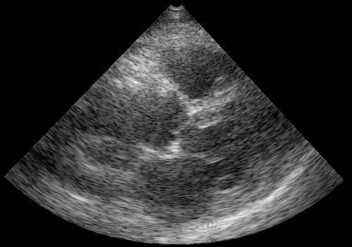
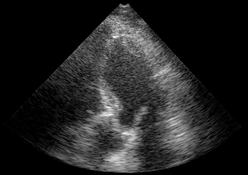
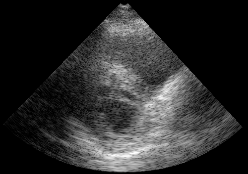
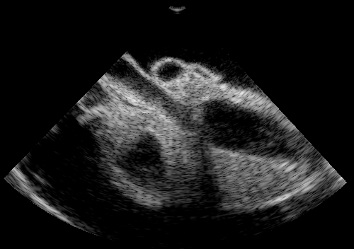
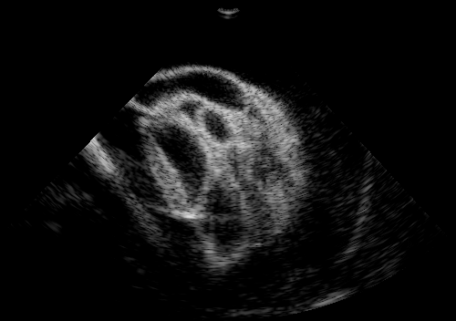
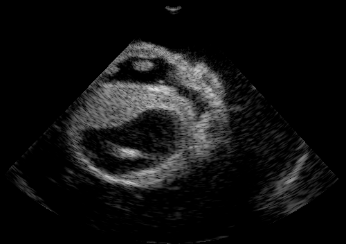
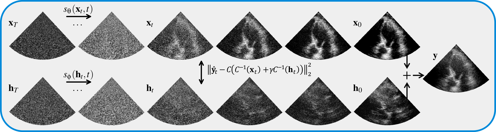

Dehazing Ultrasound
Qualitative results on in-vivo cardiac ultrasound data.
Try dragging the slider to compare the input and dehazed images.
Cardiac cine-loop

Comparison on in-vivo data

Varying dehazing strength
Use the slider to change the dehazing strength through the gamma parameter. The higher the gamma (γ), the stronger the dehazing.



Comparison on phantom data
In-vitro results using the phantom data. The ground truth ultrasound x and haze signals h which are used to construct measurement y are shown on the left. RF-based dehazing results are on the right, for both the baseline methods (BM3D and NCSNv2) and the proposed diffusion method. For the latter, we show posterior solutions for both the ultrasound and haze signals (lower inset plot to the right). For all methods, we show error plots that highlight the difference between ground truth and dehazed images, with the proposed diffusion method notably dropping less signal.

Flick through the images below to see the results on the phantom data. Notice how the proposed method is able to remove the haze while preserving the signal. The baselines either are unable to remove the haze or remove too much signal (see error plots).




Overview of the algorithm
The dehazing diffusion process, where the reverse diffusion trajectory is displayed from left to right for both signal (top) and haze (bottom) in parallel. During each step of the posterior sampling process, data consistency is enforced through the measurement model.

References
[1] A. Fatemi, E. A. R. Berg, and A. Rodriguez-Molares. Studying the Origin of Reverberation Clutter in Echocardiography: In Vitro Experiments and In Vivo Demonstrations. Ultrasound in Medicine & Biology, 2019.
[2] Jahren, Tollef Struksnes and Sornes, Anders Rasmus and Denarie, Bastien and Steen, Erik and Bjastad, Tore and Solberg, Anne H Schistad. Reverberation Suppression in Echocardiography Using a Causal Convolutional Neural Network. IEEE, 2023
[3] Stevens, Tristan S. W. and van Gorp, Hans and Meral, Faik C. and Shin, Junseob and Yu, Jason and Robert, Jean-Luc and van Sloun, Ruud J. G. Removing Structured Noise with Diffusion Models. ArXiv, 2023.
BibTeX
@article{stevens2023dehazing,
title={Dehazing Ultrasound Using Diffusion Models},
author={Stevens, Tristan S. W. and Meral, Faik C. and Yu, Jason and Apostolakis, Iason Z. and Robert, Jean-Luc and van Sloun, Ruud J. G.},
journal={IEEE Transactions on Medical Imaging},
year={2024},
volume={43},
number={10},
pages={3546-3558},
doi={10.1109/TMI.2024.3363460}
}